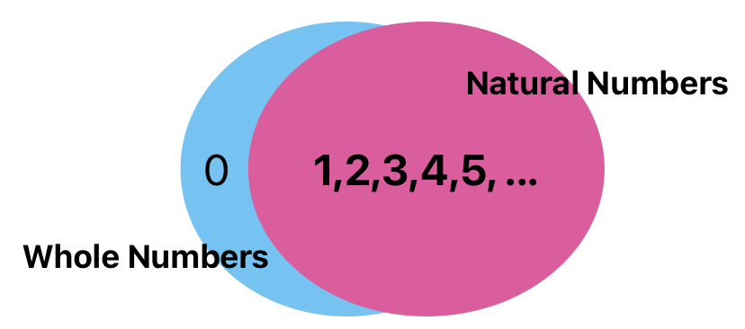
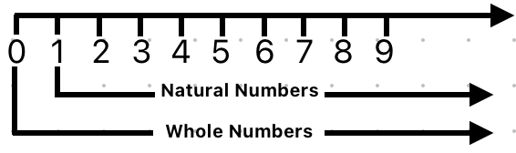
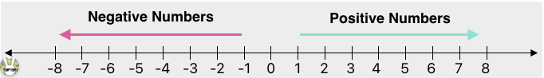
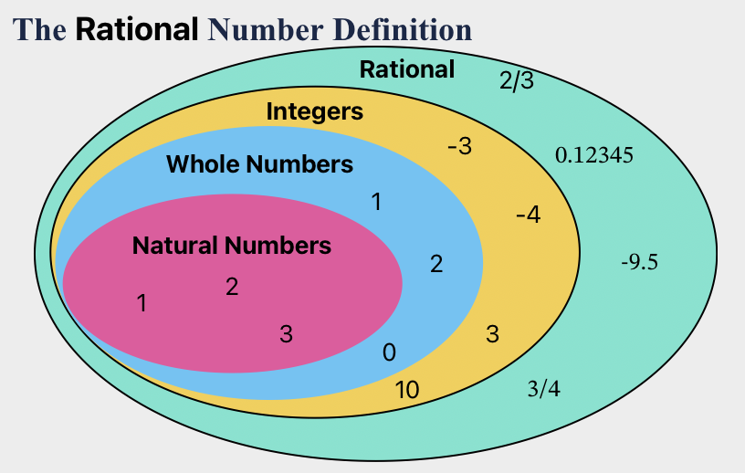

Math for Data Science#
Welcome to the Math for Data Science blog. This resource is a curated refresher on the core mathematical foundations of Data Science, structured after the academic syllabus of “Math for Data Science” by Stavros Toumpis, Assistant Professor at AUEB.
Linear Algebra:
Fundamental properties of matrices, their norms, and their applications.
Multivariable Calculus:
Differentiating/integrating multiple variable functions.
The crucial role of the Gradient (\(\nabla\)) and the Hessian matrix (\(H\)).
Optimization:
Basic properties of optimization problems involving matrices and functions of multiple variables.
Rather than dry mathematical proofs, we focus on conceptual intuition coupled with step-by-step Python implementations using numpy, scipy, and sympy.
📚 Recommended Bibliography#
For deep theoretical insights, we recommend referencing these classic textbooks:
Essential Math for DS Thomas Nield O’Reilly Media (2022)
Linear Algebra & Its Apps Gilbert Strang Thomson/Brooks Cole
Thomas’s Calculus Weir & Giordano 12th Edition, Pearson
🗺️ Course Syllabus & Lecture Path#
The module is broken down into 12 structured lectures designed to take you from core arithmetic to multivariable optimization:
Part 1: Linear Algebra & Matrix Theory#
Lecture 1: Basic matrix operations, interpreting matrices as linear mappings, and special structures (diagonal, sparse, symmetric).
Lecture 2: Square matrices, determinants (space scaling), singular vs. non-singular matrices, and inverse computations (\(A^{-1}\)).
Lecture 3: Eigenvalues and eigenvectors, the Characteristic Polynomial, the Cayley-Hamilton theorem, and Singular Value Decomposition (SVD).
Lecture 4: Complete normed spaces and vector spaces, vector norms (\(L_1\), \(L_2\), \(L_\infty\)), and matrix norms (Frobenius).
Lecture 5: Column space (Range) and Null space, vector orthogonality, projection matrices, and the Gram-Schmidt algorithm.
Lecture 6: Positive-definite matrices, eigenvalues, and their physical meaning in optimization stability.
Part 2: Multivariable Calculus & Optimization#
Lecture 7: Formulating and solving systems of linear equations (\(Ax = b\)), linear inequalities, and introduction to Linear Programming.
Lecture 8: Real-valued functions of two or more variables, domain mapping, and 3D visualization.
Lecture 9: Limits, continuity, and differentiability in \(n\)-dimensions. The Gradient vector (first-order) and the Hessian matrix (second-order).
Lecture 10: Optimization problems, identifying local maxima and minima, and analyzing extrema using the Hessian matrix.
Lecture 11: Double and triple integrals, Fubini’s theorem (changing integration order), and applications in joint probability.
Lecture 12: Convex sets, convex functions, and convex optimization. The significance of convexity vs. non-convexity in machine learning.
🏁 Get Started#
Choose any section from the sidebar or table of contents to begin your journey!
Introduction#
Welcome to the Basic Math and Calculus Review section. This module covers the essential mathematical foundations required for data science, machine learning, and statistical analysis, structured after the textbook Essential Math for Data Science.
📂 Topics Covered#
In this section, you will explore:
Number Theory: Understanding number systems (Natural, Whole, Integers, Rational, Irrational, Real, and Complex numbers) which form the foundation of computing and data representation.
Fractions: Proportions, ratios, and fractional calculations.
Decimals & Percentages: Decimals, percentage change, and performance metric conversions.
Order of Operations: Following the PEMDAS rules in mathematical calculations.
Variables: Using variable placeholders, solving linear and quadratic equations.
Functions: Domain mapping, linear equations, slope, and intercept.
Curvilinear Functions: Working with non-linear curves, parabolas, exponentials, logs, and limits.
Summations: Iterative addition and using Sigma (\(\sum\)) notation in statistics and cost functions.
Exponents: Understanding powers, square roots, and Euler’s constant.
Logarithms: Properties of logs, natural log, and log-transformations.
Calculus & Derivatives: Exploring derivatives, partial derivatives, chain rule, and gradients.
Integration: Learning about integrals, Riemann sums approximation, symbolic/numerical integration, and probability density functions.
🚀 Get Started#
Select Number from the sidebar to begin your mathematical journey!
Number#

Natural Numbers#
The natural numbers are the numbers 1, 2, 3, etc., possibly including 0 as well.
The natural numbers start with 0, corresponding to the non-negative integers 0, 1, 2, 3, …, whereas others start with 1, corresponding to the positive integers 1, 2, 3, …
The natural numbers can be used for counting (as in “there are six coins on the table”), in which case they serve as cardinal numbers. They may also be used for ordering (as in “this is the third largest city in the country”), in which case they serve as ordinal numbers. Natural numbers are sometimes used as labels, known as nominal numbers, having none of the properties of numbers in a mathematical sense (e.g. sports jersey numbers).[3][6]
Set of Natural Numbers: N = {1, 2, 3, 4, 5, 6, 7, 8, 9,…}
{kind=link}

Whole Numbers#
Whole numbers are a set of numbers including all natural numbers and 0
Set of Whole Numbers: W = {0, 1, 2, 3, 4, 5, 6, 7, 8, 9, 10……}
{kind=link}

Integers#
Integers include positive and negative whole numbers as well as 0. In In the language of mathematics, the set of integers is often denoted by the boldface Z
Set of Integers: Z = {….-9, -8, -7, -6, -5, -4, -3, -2, -1, 0, 1, 2, 3, 4, 5, 6, 7, 8, 9,…}
{kind=link}

Rational Numbers#
a rational number is a number that can be expressed as the quotient or fraction 
For example, 

{kind=link}

Irrational Numbers#
Irrational numbers cannot be expressed as a fraction (That is, irrational numbers cannot be expressed as the ratio of two integers. When the ratio of lengths of two line segments is an irrational number, the line segments are also described as being incommensurable, meaning that they share no “measure” in common, that is, there is no length (“the measure”), no matter how short, that could be used to express the lengths of both of the two given segments as integer multiples of itself.
Among irrational numbers are the ratio π of a circle’s circumference to its diameter, Euler’s number e, the golden ratio φ, and the square root of two.[1] In fact, all square roots of natural numbers, other than of perfect squares, are irrational.[2]). This includes the famous Pi , square roots of certain numbers like , and Euler’s number which we will learn about later. These numbers have an infinite number of decimal digits, such as :

The common examples of irrational numbers are pi(π=3⋅14159265…), √2, √3, √5, Euler’s number (e = 2⋅718281…..), 2.010010001….,etc.

Real Numbers#
Real numbers include rational as well as irrational numbers. In practicality, when you are doing any data science work you can treat any decimals you work with as real numbers.

Complex and Imaginary Numbers#
The numbers which are not real are imaginary numbers. When we square an imaginary number, it gives a negative result. It is represented as Im().
Example: √-2, √-7, √-11 are all imaginary numbers
The complex numbers were introduced to solve the equation x2+1 = 0. The roots of the equation are of form x = ±√-1 and no real roots exist. Thus, with the introduction of complex numbers, we have Imaginary roots.
We denote √-1 with the symbol I, which denotes Iota (Imaginary number).
The complex number is basically the combination of a real number and an imaginary number. The complex number is in the form of a+ib, where a = real number and ib = imaginary number. Also, a,b belongs to real numbers and i = √-1.
Hence, a complex number is a simple representation of addition of two numbers, i.e., real number and an imaginary number. One part of it is purely real and the other part is purely imaginary.

Order of Operations (PEMDAS)#
When evaluating mathematical expressions, we must follow a strict order of operations to avoid ambiguity. The standard convention is PEMDAS:
Parentheses
()Exponents (Powers and Roots)
Multiplication and Division (from left to right)
Addition and Subtraction (from left to right)
Python Implementation#
Python automatically follows PEMDAS when evaluating expressions:
# 3 + 5 * 2^3 - (4 / 2)
# 1. Parentheses: (4 / 2) -> 2
# 2. Exponents: 2^3 -> 8
# 3. Multiplication: 5 * 8 -> 40
# 4. Addition/Subtraction: 3 + 40 - 2 -> 41
result = 3 + 5 * 2**3 - (4 / 2)
print("Result of expression:", result)
Exercises#
Exercise 1
Evaluate the expression using PEMDAS rules: $\(12 - 3 \times (2 + 1)^2 \div 9 + 4\)$ Verify your answer with Python.
Solution — Exercise 1
According to PEMDAS:
Parentheses: \((2 + 1) = 3\)
Exponents: \(3^2 = 9\)
Multiplication/Division (left to right):
\(3 \times 9 = 27\)
\(27 \div 9 = 3\)
Addition/Subtraction (left to right):
\(12 - 3 = 9\)
\(9 + 4 = 13\)
Verification in Python:
ans = 12 - 3 * (2 + 1)**2 / 9 + 4
print("Answer:", ans) # Output: 13.0
Fractions#
Fractions represent a part of a whole. In data science, fractions are the foundation of probabilities, proportions, and ratios (such as precision and recall).
1. What Is a Fraction?#
A fraction is written as:
Where:
\(a\) is the numerator (how many parts we have).
\(b\) is the denominator (how many equal parts the whole is divided into).
2. Basic Operations#
Addition & Subtraction#
To add or subtract fractions, they must have a common denominator:
Multiplication#
Multiply numerators together and denominators together:
Division#
To divide by a fraction, multiply by its reciprocal:
3. Python Fraction Module#
Python has a built-in module fractions to handle exact fraction arithmetic:
from fractions import Fraction
# Create fractions
f1 = Fraction(1, 3)
f2 = Fraction(1, 2)
# Arithmetic operations
print("1/3 + 1/2 =", f1 + f2)
print("2/3 * 3/4 =", Fraction(2, 3) * Fraction(3, 4))
Exercises#
Exercise 1
Calculate: $\(\frac{3}{4} \div \frac{2}{3} - \frac{1}{2}\)$
Solution — Exercise 1
Perform division first: $\(\frac{3}{4} \times \frac{3}{2} = \frac{9}{8}\)$
Perform subtraction: $\(\frac{9}{8} - \frac{1}{2} = \frac{9}{8} - \frac{4}{8} = \frac{5}{8}\)$
Decimals & Percentages#
Decimals and percentages are alternative ways of expressing fractions and proportions. In Data Science, we constantly work with probability values as decimals (e.g., \(0.85\)) and interpret evaluation metrics as percentages (e.g., \(85\%\)).
1. Decimals#
A decimal is a fraction whose denominator is a power of ten (10, 100, 1000, etc.), written using a decimal point.
For example: $\(\frac{7}{10} = 0.7\)\( \)\(\frac{125}{1000} = 0.125\)$
Repeating Decimals#
Some fractions produce infinitely repeating decimals: $\(\frac{1}{3} = 0.3333\dots\)$
2. Percentages#
The word percent means “per hundred”. To convert a decimal to a percentage, multiply by 100 and add the \(\%\) sign.
Percentage Change#
In data analysis, we often compute the percentage change between two values (e.g. increase in website traffic):
3. Python Implementations#
# Calculating percentage change
old_revenue = 150
new_revenue = 180
pct_change = ((new_revenue - old_revenue) / old_revenue) * 100
print(f"Revenue growth: {pct_change:.1f}%")
Exercises#
Exercise 1
A model correctly classified 45 out of 60 test images. What is the classification accuracy in percentage?
Solution — Exercise 1
Compute the proportion: $\(\text{Accuracy} = \frac{45}{60} = 0.75\)\( Convert to percentage: \)\(0.75 \times 100\% = 75\%\)$
Order of Operations#
In mathematics and computer science, we evaluate expressions based on a strict order of operations to avoid ambiguity. The standard convention is PEMDAS (or BODMAS in some regions).
1. The PEMDAS Rule#
When solving mathematical expressions, perform calculations in the following order:
Parentheses
()Exponents (Powers, Roots)
Multiplication and Division (evaluated from left to right)
Addition and Subtraction (evaluated from left to right)
2. Python Implementation#
Python automatically follows PEMDAS rules when calculating expressions:
# Expression: 3 + 5 * 2^3 - (4 / 2)
# Step-by-step:
# 1. Parentheses: (4 / 2) -> 2.0
# 2. Exponents: 2**3 -> 8
# 3. Multiplication: 5 * 8 -> 40
# 4. Add/Subtract: 3 + 40 - 2.0 -> 41.0
result = 3 + 5 * 2**3 - (4 / 2)
print("Computed result:", result)
Exercises#
Exercise 1
Evaluate the expression manually: $\(10 - 2 \times (3 + 1)^2 \div 8 + 5\)$ Verify your answer with Python.
Solution — Exercise 1
Using PEMDAS:
Parentheses: \((3 + 1) = 4\)
Exponents: \(4^2 = 16\)
Multiplication/Division (left to right):
\(2 \times 16 = 32\)
\(32 \div 8 = 4\)
Addition/Subtraction (left to right):
\(10 - 4 = 6\)
\(6 + 5 = 11\)
Variables#
In mathematics and programming, a variable is a named placeholder or symbol (such as \(x\), \(y\), or \(w\)) used to represent a value that can change or is currently unknown. In Machine Learning, variables represent our data features and model parameters.
1. Linear Equations#
A linear equation is an equation of a straight line, typically written as:
To solve for \(x\):
Multi-variable Linear Equations#
In Machine Learning, we often map relationships as linear combinations:
This represents a plane in 3D space, which is the foundation of Multiple Linear Regression.
2. Quadratic Equations#
A quadratic equation is in the form:
The solutions (roots) can be found using the quadratic formula:
3. Symbolic Algebra in Python with SymPy#
We can solve algebraic equations exactly using SymPy:
import sympy as sp
x = sp.symbols('x')
# Solve: 2x - 6 = 0
eq1 = sp.Eq(2*x - 6, 0)
sol1 = sp.solve(eq1, x)
print("Solution for 2x - 6 = 0:", sol1)
# Solve quadratic: x^2 - 5x + 6 = 0
eq2 = sp.Eq(x**2 - 5*x + 6, 0)
sol2 = sp.solve(eq2, x)
print("Solutions for x^2 - 5x + 6 = 0:", sol2)
Exercises#
Exercise 1
Solve the quadratic equation: $\(x^2 - 4x - 5 = 0\)$
Solution — Exercise 1
Using coefficients \(a=1, b=-4, c=-5\): $\(x = \frac{-(-4) \pm \sqrt{(-4)^2 - 4(1)(-5)}}{2(1)}\)\( \)\(x = \frac{4 \pm \sqrt{16 + 20}}{2} = \frac{4 \pm \sqrt{36}}{2}\)\( \)\(x_1 = \frac{4 + 6}{2} = 5, \quad x_2 = \frac{4 - 6}{2} = -1\)$
Functions#
A function is a mathematical rule that takes an input (usually denoted as \(x\)) and maps it to a unique output (usually denoted as \(y\) or \(f(x)\)). In Data Science, we use functions to represent relationships between features (inputs) and targets (outputs).
1. What Is a Function?#
Formally, a function \(f\) maps elements from a domain \(X\) to a codomain \(Y\):
For every input \(x \in X\), there is exactly one output \(y \in Y\) such that \(y = f(x)\).
2. Linear Functions#
A linear function is a function that creates a straight line when graphed. Its general algebraic form is:
Where:
\(m\) is the slope (rate of change, or gradient). It determines the steepness of the line: $\(m = \frac{y_2 - y_1}{x_2 - x_1}\)$
\(c\) is the y-intercept (where the line crosses the y-axis, i.e., \(f(0)\)).
In Machine Learning, this equation forms the basis of Simple Linear Regression, where \(m\) is the weight (\(w\)) and \(c\) is the bias (\(b\)): $\(y = wx + b\)$
3. Plotting Linear Functions in Python#
We can use matplotlib to plot linear functions and visualize their slopes and intercepts:
import numpy as np
import matplotlib.pyplot as plt
# Generate x values
x = np.linspace(-10, 10, 100)
# Define two linear functions
y1 = 2 * x + 3 # slope = 2, intercept = 3
y2 = -0.5 * x - 1 # slope = -0.5, intercept = -1
# Plot
plt.figure(figsize=(8, 5))
plt.plot(x, y1, label="y = 2x + 3", color="blue")
plt.plot(x, y2, label="y = -0.5x - 1", color="red")
plt.axhline(0, color='black',linewidth=0.5)
plt.axvline(0, color='black',linewidth=0.5)
plt.grid(color='gray', linestyle='--', linewidth=0.5)
plt.legend()
plt.title("Linear Functions")
plt.savefig('../../images/linear_functions.png', dpi=150)
plt.show()
Exercises#
Exercise 1
A line passes through the points \((1, 3)\) and \((3, 7)\).
Find the slope of the line.
Determine the equation of the line.
Solution — Exercise 1
Slope (\(m\)): $\(m = \frac{7 - 3}{3 - 1} = \frac{4}{2} = 2\)$
Using the point-slope form \(y - y_1 = m(x - x_1)\) with point \((1, 3)\): $\(y - 3 = 2(x - 1) \implies y = 2x + 1\)$
Curvilinear Functions#
A curvilinear function is a non-linear function whose graph forms a curve rather than a straight line. In Data Science, curvilinear functions model complex patterns, growth rates, activation thresholds (like Sigmoid), and loss curves.
1. Types of Curvilinear Functions#
Quadratic Functions (Parabolas)#
A quadratic function is a second-degree polynomial in the form:
Its graph is a parabola. If \(a > 0\), the parabola opens upwards (having a minimum). If \(a < 0\), it opens downwards (having a maximum). This shape is central to squared loss functions (\(MSE = \frac{1}{n} \sum (y_i - \hat{y}_i)^2\)).
Exponential Functions#
Exponential functions represent rapid growth or decay, in the form:
Where \(e \approx 2.71828\). This is used to model population growth, compounding interest, or decay rates in learning algorithms.
Logarithmic Functions#
The logarithmic function is the inverse of the exponential function:
It grows very rapidly at first but levels off. In machine learning, log functions are used in log-transforms to scale heavily skewed features.
2. Limits and Curvature#
Because the slope of a curvilinear function is constantly changing at every point, we cannot define a single slope.
Secant Line: The average rate of change between two points \((x_1, y_1)\) and \((x_2, y_2)\).
Tangent Line: The instantaneous rate of change at a single point, which we find using limits and calculus.
3. Plotting Curvilinear Functions in Python#
Let’s visualize a quadratic curve and the standard Logistic Sigmoid function (\(S(x) = \frac{1}{1 + e^{-x}}\)) commonly used in Logistic Regression:
import numpy as np
import matplotlib.pyplot as plt
x = np.linspace(-6, 6, 200)
# Quadratic function
y_quad = x**2
# Sigmoid function
y_sigmoid = 1 / (1 + np.exp(-x))
# Plotting
fig, (ax1, ax2) = plt.subplots(1, 2, figsize=(12, 5))
# Parabola
ax1.plot(x, y_quad, color='blue', label=r'$y = x^2$')
ax1.set_title("Quadratic Function")
ax1.grid(True)
ax1.legend()
# Sigmoid
ax2.plot(x, y_sigmoid, color='green', label=r'$S(x) = \frac{1}{1 + e^{-x}}$')
ax2.set_title("Sigmoid Activation Function")
ax2.grid(True)
ax2.legend()
plt.savefig('../../images/curvilinear_functions.png', dpi=150)
plt.show()
Exercises#
Exercise 1
Find the vertex (minimum point) of the quadratic function: $\(f(x) = x^2 - 6x + 9\)\( *Hint: The x-coordinate of the vertex of \)ax^2 + bx + c\( is given by \)x = -b / 2a$.*
Solution — Exercise 1
Using the formula \(x = -b / 2a\): $\(x = \frac{-(-6)}{2(1)} = 3\)\( Compute \)f(3)\(: \)\(f(3) = 3^2 - 6(3) + 9 = 9 - 18 + 9 = 0\)\( The vertex (minimum) is at \)(3, 0)$.
Summations#
A summation is the operation of adding a sequence of numbers. In mathematics and data science, we represent this using the Greek capital letter Sigma (\(\sum\)).
1. What Is a Summation?#
A summation is written in the following format:
Where:
\(i\) is the index of summation (start variable).
\(1\) is the lower limit (starting point).
\(n\) is the upper limit (ending point).
\(x_i\) represents the term to be added at index \(i\).
This expands to: $\(\sum_{i=1}^{n} x_i = x_1 + x_2 + x_3 + \dots + x_n\)$
Example:#
2. Summations in Data Science#
We use summations to define key algorithms and performance metrics.
Mean (Trung bình cộng):#
Mean Squared Error (MSE Loss):#
3. Python Implementation#
You can compute summations in Python using loops or NumPy’s sum() function:
import numpy as np
# Data points
x = [2, 4, 6, 8]
# 1. Summation using built-in sum()
total = sum(x)
print("Sum of elements:", total)
# 2. Summation using NumPy
np_total = np.sum(x)
print("NumPy sum:", np_total)
Exercises#
Exercise 1
Evaluate the summation: $\(\sum_{i=2}^{5} (2i - 1)\)$
Solution — Exercise 1
Expand the expression for \(i = 2, 3, 4, 5\):
For \(i=2\): \(2(2) - 1 = 3\)
For \(i=3\): \(2(3) - 1 = 5\)
For \(i=4\): \(2(4) - 1 = 7\)
For \(i=5\): \(2(5) - 1 = 9\)
Sum the values: $\(3 + 5 + 7 + 9 = 24\)$
Exponents#
An exponent (or power) represents repeated multiplication of a number by itself. In Data Science, exponential functions model growth rates, decay rates, and activation functions.
1. What Is an Exponent?#
An exponent is written as:
Where:
\(x\) is the base.
\(n\) is the exponent (or power).
This represents \(x\) multiplied by itself \(n\) times: $\(3^4 = 3 \times 3 \times 3 \times 3 = 81\)$
Rules of Exponents#
Exponents follow specific algebraic properties:
Product Rule: \(x^a \cdot x^b = x^{a+b}\)
Quotient Rule: \(\frac{x^a}{x^b} = x^{a-b}\)
Power of a Power Rule: \((x^a)^b = x^{a \cdot b}\)
Negative Exponent Rule: \(x^{-n} = \frac{1}{x^n}\)
Fractional Exponents (Roots): \(x^{\frac{1}{n}} = \sqrt[n]{x}\)
2. Euler’s Number (\(e\))#
Of special importance in calculus and data science is Euler’s number \(e \approx 2.71828\). It is an irrational number that represents the base of natural growth:
3. Python Implementation#
import math
# Exponential calculations: 3^4
print("3^4 =", 3**4)
# Euler's number calculation: e^2
print("e^2 =", math.exp(2))
Exercises#
Exercise 1
Simplify the expression: $\(\frac{x^5 \cdot x^2}{x^3}\)$
Solution — Exercise 1
Apply the rules of exponents:
Product Rule: \(x^5 \cdot x^2 = x^{5+2} = x^7\)
Quotient Rule: \(\frac{x^7}{x^3} = x^{7-3} = x^4\)
Logarithms#
A logarithm is the mathematical operation that is the inverse of exponentiation. Logarithms are widely used in Data Science to scale skewed data (log-transform) and calculate errors in classification loss functions.
1. What Is a Logarithm?#
The logarithm answers the question: To what power must we raise the base to get a certain number?
If: $\(b^y = x\)$
Then: $\(\log_b(x) = y\)$
For example: $\(\log_2(8) = 3 \quad \text{because} \quad 2^3 = 8\)$
2. Common Properties of Logarithms#
Logarithms possess unique mathematical properties that simplify complex operations:
Product Rule: \(\log_b(x \cdot y) = \log_b(x) + \log_b(y)\)
Quotient Rule: \(\log_b(\frac{x}{y}) = \log_b(x) - \log_b(y)\)
Power Rule: \(\log_b(x^k) = k \cdot \log_b(x)\)
Two Crucial Bases:#
Natural Logarithm (\(\ln(x)\)): Logarithm with base \(e \approx 2.71828\).
Common Logarithm (\(\log_{10}(x)\)): Logarithm with base 10.
3. Python Implementation#
We can compute logarithms in Python using the math and numpy libraries:
import math
import numpy as np
# Natural logarithm: ln(10)
print("ln(10) =", math.log(10)) # math.log defaults to base e
# Base 10 logarithm
print("log10(100) =", math.log10(100))
# NumPy log-transform on an array
data = np.array([1, 10, 100, 1000])
log_data = np.log10(data)
print("Log-transformed data:", log_data)
Exercises#
Exercise 1
Solve for \(x\): $\(\log_3(x) = 4\)$
Exercise 2
Expand the expression using logarithm properties: $\(\ln\left(\frac{x^3}{y}\right)\)$
Solution — Exercise 1
Convert to exponential form: $\(x = 3^4 = 81\)$
Solution — Exercise 2
Apply the quotient and power rules: $\(\ln\left(\frac{x^3}{y}\right) = \ln(x^3) - \ln(y) = 3\ln(x) - \ln(y)\)$
Calculus & Derivatives#
Calculus is the mathematical framework that allows us to understand change. In Machine Learning, calculus provides the engine (such as derivatives and the chain rule) that lets models evaluate and update their parameters.
Here we cover the essential calculus tools used to analyze functions of single and multiple variables.
1. What Is a Derivative?#
The derivative of a function measures how the output value changes relative to a change in its input. Geometrically, the derivative is the slope of the tangent line to the graph of the function at a given point.
For a function \(f(x)\), the derivative \(f'(x)\) (also written as \(\frac{df}{dx}\)) is defined using limits:
2. Basic Rules of Differentiation#
Calculating derivatives using limits can be tedious. Instead, we use standard differentiation rules:
Power Rule: \(\frac{d}{dx}(x^n) = n x^{n-1}\)
Constant Rule: \(\frac{d}{dx}(c) = 0\)
Sum Rule: \(\frac{d}{dx}(f + g) = f' + g'\)
Product Rule: \(\frac{d}{dx}(f \cdot g) = f'g + fg'\)
Quotient Rule: \(\frac{d}{dx}(\frac{f}{g}) = \frac{f'g - fg'}{g^2}\)
3. The Chain Rule#
The Chain Rule is a formula for calculating the derivative of the composition of two or more functions: \(f(g(x))\).
If \(y = f(u)\) and \(u = g(x)\), then:
Why it matters in Deep Learning#
In neural networks, the loss (error) is a nested composition of functions across layers. The Chain Rule is the mathematical backbone of Backpropagation, allowing the network to calculate how changes in early weights affect the final output error.
4. Partial Derivatives & Gradients#
When a function has multiple variables, e.g., \(f(x, y)\), we use partial derivatives. A partial derivative measures the rate of change with respect to one variable while keeping all other variables constant.
Partial derivative with respect to \(x\): \(\frac{\partial f}{\partial x}\)
Partial derivative with respect to \(y\): \(\frac{\partial f}{\partial y}\)
The Gradient Vector#
The gradient is a vector containing all the partial derivatives of a multivariable function. It is denoted by the symbol \(\nabla\) (nabla):
Geometrical Meaning: The gradient vector points in the direction of the steepest ascent (greatest increase) of the function at that point.
5. Python Implementation (SymPy)#
We can compute exact symbolic derivatives and gradients easily in Python:
import sympy as sp
x, y = sp.symbols('x y')
f = x**2 * y + 3*x * sp.sin(y)
# 1. Single derivative
df_dx = sp.diff(f, x)
print("Partial derivative w.r.t x :", df_dx)
# 2. Derivative w.r.t y
df_dy = sp.diff(f, y)
print("Partial derivative w.r.t y :", df_dy)
Exercises#
Exercise 1
Find the derivative of \(f(x) = 5x^3 - 2x^2 + 7\).
Exercise 2
Apply the Chain Rule to find the derivative of: $\(f(x) = (3x^2 + 1)^4\)$
Exercise 3
Find the gradient vector \(\nabla f(x, y)\) of: $\(f(x, y) = 3x^2y^3 + 2y\)$
Solution — Exercise 1
Using the Power and Sum rules: $\(f'(x) = 5(3x^2) - 2(2x) + 0 = 15x^2 - 4x\)$
Solution — Exercise 2
Let \(u = 3x^2 + 1\) (inside function) and \(y = u^4\) (outside function).
\(\frac{dy}{du} = 4u^3\)
\(\frac{du}{dx} = 6x\)
Applying the Chain Rule: $\(\frac{dy}{dx} = 4(3x^2 + 1)^3 \cdot 6x = 24x(3x^2 + 1)^3\)$
Solution — Exercise 3
Compute partial derivatives:
\(\frac{\partial f}{\partial x} = 6xy^3\)
\(\frac{\partial f}{\partial y} = 9x^2y^2 + 2\)
The gradient vector is: $\(\nabla f(x, y) = \begin{bmatrix} 6xy^3 \\ 9x^2y^2 + 2 \end{bmatrix}\)$
Integration#
Integration is one of the two fundamental operations of calculus (alongside differentiation). While a derivative tells us the rate of change of a function, an integral tells us the accumulated area under a curve.
In data science, integration is essential for:
Computing probabilities from probability density functions (PDFs)
Understanding the Normal Distribution’s CDF
Calculating expected values in statistics
What Is an Integral?#
Imagine you are driving a car. Your speedometer shows your speed at any given moment (the derivative). If you want to know how far you’ve traveled, you need to accumulate that speed over time — that’s integration.
Formally, the definite integral of a function \(f(x)\) from \(a\) to \(b\) is written as:
This represents the area between the curve \(f(x)\) and the x-axis, from \(x = a\) to \(x = b\).
Note
If \(f(x)\) is negative in some region, the area there is counted as negative. The integral gives the net signed area.
Riemann Sums — Approximating the Area#
Before computers, mathematicians approximated integrals by slicing the area under a curve into many thin rectangles and summing their areas. This is called a Riemann Sum.
Step 1: Understand the idea#
Suppose we want to find the area under \(f(x) = x^2\) from \(x = 0\) to \(x = 1\).
We divide the interval \([0, 1]\) into \(n\) equal slices, each of width:
For each slice \(i\), we pick a point \(x_i\) and draw a rectangle of height \(f(x_i)\) and width \(\Delta x\).
The total approximated area is:
As \(n \to \infty\), the approximation becomes exact:
Step 2: Three types of Riemann Sums#
Type |
How to pick \(x_i\) |
Tendency |
|---|---|---|
Left Riemann Sum |
Left edge of each slice |
Under-estimates for increasing \(f\) |
Right Riemann Sum |
Right edge of each slice |
Over-estimates for increasing \(f\) |
Midpoint Riemann Sum |
Center of each slice |
Most accurate of the three |
Step 3: Implement in Python#
import numpy as np
import matplotlib.pyplot as plt
# Define the function f(x) = x^2
def f(x):
return x ** 2
# Parameters
a = 0 # lower bound
b = 1 # upper bound
n = 10 # number of rectangles
# Width of each rectangle
dx = (b - a) / n
# Generate x positions for each rectangle
x_left = np.linspace(a, b - dx, n) # left edges
x_right = np.linspace(a + dx, b, n) # right edges
x_mid = x_left + dx / 2 # midpoints
# Compute Riemann Sums
left_sum = np.sum(f(x_left) * dx)
right_sum = np.sum(f(x_right) * dx)
mid_sum = np.sum(f(x_mid) * dx)
print(f"Left Riemann Sum (n={n}): {left_sum:.6f}")
print(f"Right Riemann Sum (n={n}): {right_sum:.6f}")
print(f"Midpoint Sum (n={n}): {mid_sum:.6f}")
print(f"Exact answer : {1/3:.6f}") # ∫x² dx from 0 to 1 = 1/3
Output:
Left Riemann Sum (n=10): 0.285000
Right Riemann Sum (n=10): 0.385000
Midpoint Sum (n=10): 0.332500
Exact answer : 0.333333
Step 4: Visualize the rectangles#
import numpy as np
import matplotlib.pyplot as plt
def f(x):
return x ** 2
a, b, n = 0, 1, 10
dx = (b - a) / n
x_left = np.linspace(a, b - dx, n)
# Smooth curve
x_curve = np.linspace(a, b, 300)
fig, ax = plt.subplots(figsize=(8, 5))
# Draw rectangles (Left Riemann Sum)
ax.bar(x_left, f(x_left), width=dx, align='edge',
alpha=0.4, color='steelblue', edgecolor='black', label='Rectangles (Left Sum)')
# Draw the actual curve
ax.plot(x_curve, f(x_curve), 'r-', linewidth=2.5, label=r'$f(x) = x^2$')
ax.set_xlabel('x', fontsize=12)
ax.set_ylabel('f(x)', fontsize=12)
ax.set_title(f'Left Riemann Sum with n={n} rectangles', fontsize=14)
ax.legend()
plt.tight_layout()
plt.savefig('../../images/riemann_sum.png', dpi=150)
plt.show()
Step 5: Increasing accuracy with more rectangles#
import numpy as np
def f(x):
return x ** 2
a, b = 0, 1
exact = 1 / 3 # true value of ∫x² dx from 0 to 1
print(f"{'n':>8} | {'Left Sum':>12} | {'Right Sum':>12} | {'Midpoint':>12} | {'Error (mid)':>12}")
print("-" * 65)
for n in [5, 10, 50, 100, 1000, 10000]:
dx = (b - a) / n
x_left = np.linspace(a, b - dx, n)
x_right = np.linspace(a + dx, b, n)
x_mid = x_left + dx / 2
left = np.sum(f(x_left) * dx)
right = np.sum(f(x_right) * dx)
mid = np.sum(f(x_mid) * dx)
error = abs(mid - exact)
print(f"{n:>8} | {left:>12.8f} | {right:>12.8f} | {mid:>12.8f} | {error:>12.2e}")
Output:
n | Left Sum | Right Sum | Midpoint | Error (mid)
-----------------------------------------------------------------
5 | 0.24000000 | 0.44000000 | 0.33500000 | 1.67e-03
10 | 0.28500000 | 0.38500000 | 0.33250000 | 8.33e-04
50 | 0.32340000 | 0.34340000 | 0.33330000 | 3.33e-05
100 | 0.32835000 | 0.33835000 | 0.33332500 | 8.33e-06
1000 | 0.33283350 | 0.33383350 | 0.33333333 | 8.33e-09
10000 | 0.33328334 | 0.33338334 | 0.33333333 | 8.33e-11
The midpoint rule converges the fastest — with \(n = 1000\) it’s already accurate to 8 decimal places.
Computing Integrals with SciPy#
Instead of approximating manually, we can use scipy.integrate.quad for accurate numerical integration.
Step 1: Basic usage of quad#
from scipy.integrate import quad
# Define the function
def f(x):
return x ** 2
# Integrate f(x) from 0 to 1
result, error = quad(f, 0, 1)
print(f"Integral result : {result:.10f}")
print(f"Estimated error : {error:.2e}")
print(f"Exact value : {1/3:.10f}")
Output:
Integral result : 0.3333333333
Estimated error : 3.70e-15
Exact value : 0.3333333333
Step 2: Integrate more complex functions#
from scipy.integrate import quad
import numpy as np
# Example 1: ∫ sin(x) dx from 0 to π
result, _ = quad(np.sin, 0, np.pi)
print(f"∫ sin(x) dx from 0 to π = {result:.6f}") # Expected: 2.0
# Example 2: ∫ e^(-x²) dx from -∞ to +∞ (Gaussian integral)
result, _ = quad(lambda x: np.exp(-x**2), -np.inf, np.inf)
print(f"∫ e^(-x²) dx from -∞ to +∞ = {result:.6f}") # Expected: √π ≈ 1.7725
print(f"√π = {np.sqrt(np.pi):.6f}")
Output:
∫ sin(x) dx from 0 to π = 2.000000
∫ e^(-x²) dx from -∞ to +∞ = 1.772454
√π = 1.772454
Symbolic Integration with SymPy#
SymPy can compute integrals symbolically (exact answers, not approximations).
Step 1: Indefinite integrals (antiderivatives)#
from sympy import symbols, integrate, sin, exp, oo, sqrt, pi
x = symbols('x')
# Indefinite integral of x²
expr = x**2
antideriv = integrate(expr, x)
print(f"∫ x² dx = {antideriv} + C")
# Indefinite integral of sin(x)
print(f"∫ sin(x) dx = {integrate(sin(x), x)} + C")
Output:
∫ x² dx = x**3/3 + C
∫ sin(x) dx = -cos(x) + C
Step 2: Definite integrals#
from sympy import symbols, integrate, sin, Rational
x = symbols('x')
# Definite integral of x² from 0 to 1
result = integrate(x**2, (x, 0, 1))
print(f"∫₀¹ x² dx = {result}") # 1/3
# Definite integral of sin(x) from 0 to π
result2 = integrate(sin(x), (x, 0, Rational(355, 113))) # ≈ π
print(f"∫₀^π sin(x) dx ≈ {float(result2):.6f}")
Real-World Application: Probability from a PDF#
In statistics, many probability distributions are defined by a Probability Density Function (PDF). The probability that a value falls between \(a\) and \(b\) is:
Example: Normal Distribution#
The PDF of the standard Normal distribution is:
Let’s compute the probability that a value falls within 1 standard deviation of the mean (i.e., between \(-1\) and \(1\)):
from scipy.integrate import quad
from scipy.stats import norm
import numpy as np
# Standard normal PDF
def normal_pdf(x, mu=0, sigma=1):
return (1 / (sigma * np.sqrt(2 * np.pi))) * np.exp(-0.5 * ((x - mu) / sigma) ** 2)
# Step 1: Compute P(-1 ≤ X ≤ 1) by integration
prob_1sigma, _ = quad(normal_pdf, -1, 1)
print(f"P(-1 ≤ X ≤ 1) = {prob_1sigma:.4f} ({prob_1sigma*100:.2f}%)")
# Step 2: P(-2 ≤ X ≤ 2)
prob_2sigma, _ = quad(normal_pdf, -2, 2)
print(f"P(-2 ≤ X ≤ 2) = {prob_2sigma:.4f} ({prob_2sigma*100:.2f}%)")
# Step 3: P(-3 ≤ X ≤ 3)
prob_3sigma, _ = quad(normal_pdf, -3, 3)
print(f"P(-3 ≤ X ≤ 3) = {prob_3sigma:.4f} ({prob_3sigma*100:.2f}%)")
# Step 4: Verify using scipy's built-in CDF
print("\n--- Verification using scipy.stats.norm.cdf ---")
print(f"P(-1 ≤ X ≤ 1) = {norm.cdf(1) - norm.cdf(-1):.4f}")
print(f"P(-2 ≤ X ≤ 2) = {norm.cdf(2) - norm.cdf(-2):.4f}")
print(f"P(-3 ≤ X ≤ 3) = {norm.cdf(3) - norm.cdf(-3):.4f}")
Output:
P(-1 ≤ X ≤ 1) = 0.6827 (68.27%)
P(-2 ≤ X ≤ 2) = 0.9545 (95.45%)
P(-3 ≤ X ≤ 3) = 0.9973 (99.73%)
--- Verification using scipy.stats.norm.cdf ---
P(-1 ≤ X ≤ 1) = 0.6827
P(-2 ≤ X ≤ 2) = 0.9545
P(-3 ≤ X ≤ 3) = 0.9973
This confirms the famous 68-95-99.7 rule of the Normal Distribution.
Exercises#
Exercise 1
Use a Riemann Sum (with \(n = 100\)) to approximate:
Then verify your answer using scipy.integrate.quad.
Hint: The exact answer is 14.
Exercise 2
Using sympy.integrate, compute the following indefinite integrals:
\(\int (4x^3 - 2x)\, dx\)
\(\int e^{2x}\, dx\)
\(\int \frac{1}{x}\, dx\)
Exercise 3
A machine produces parts whose weights follow a Normal distribution with mean \(\mu = 100g\) and standard deviation \(\sigma = 5g\).
What is the probability that a randomly selected part weighs between 90g and 110g?
Use scipy.integrate.quad with a normal PDF to answer this.
Solution — Exercise 1
```python import numpy as np from scipy.integrate import quad
def f(x): return 3x**2 + 2x + 1
Riemann Sum (Midpoint, n=100)
a, b, n = 0, 2, 100 dx = (b - a) / n x_mid = np.linspace(a + dx/2, b - dx/2, n) riemann = np.sum(f(x_mid) * dx) print(f”Riemann Sum (n=100): {riemann:.6f}”)
Exact via scipy
exact, _ = quad(f, 0, 2) print(f”scipy.quad result : {exact:.6f}”) print(f”True answer : 14”) ```
Probability#
Probability is the study of uncertainty. In data science and machine learning, we use probability to build models under uncertainty, estimate parameters, evaluate classifiers (using metrics like precision and recall), and build complex systems like Naive Bayes classifiers or Bayesian networks.
1. What is Probability?#
Probability quantifies how likely an event is to occur. It is always a value between \(0\) (impossible) and \(1\) (certain).
Probability vs. Odds#
Probability: The ratio of the target event’s occurrence to all possible outcomes. $\(\text{Probability} = \frac{\text{Successes}}{\text{Total Outcomes}}\)$
Odds: The ratio of the probability of the event occurring to the probability of the event not occurring. $\(\text{Odds} = \frac{P(\text{Event})}{1 - P(\text{Event})}\)$
For example, if you roll a 6-sided die, the probability of rolling a \(4\) is \(1/6 \approx 0.1667\). The odds of rolling a \(4\) are \(\frac{1/6}{5/6} = 1:5\) (one to five).
Joint Probabilities (AND)#
The probability of two events \(A\) and \(B\) both happening is denoted as \(P(A \cap B)\).
For Independent Events: The occurrence of one event does not affect the other. $\(P(A \cap B) = P(A) \cdot P(B)\)$ Example: Flipping a coin and rolling a die.
For Dependent Events: The occurrence of one event affects the probability of the other. $\(P(A \cap B) = P(A) \cdot P(B|A)\)$ Example: Drawing two aces consecutively from a deck of cards without replacement.
Union Probabilities (OR)#
The probability of event \(A\) or event \(B\) occurring is:
If the events are mutually exclusive (cannot happen at the same time, meaning \(P(A \cap B) = 0\)), then:
3. Conditional Probability & Bayes’ Theorem#
Conditional probability is the probability of event \(A\) occurring given that event \(B\) has already occurred. It is written as \(P(A|B)\):
Bayes’ Theorem#
By rearranging the conditional probability formula, we get Bayes’ Theorem, which updates our belief in a hypothesis (\(A\)) after observing new evidence (\(B\)):
Where:
\(P(A|B)\) is the posterior probability.
\(P(B|A)\) is the likelihood.
\(P(A)\) is the prior probability.
\(P(B)\) is the marginal probability (evidence).
Python Implementation of Bayes’ Theorem#
Suppose a diagnostic medical test has a \(99\%\) sensitivity (true positive rate) and a \(99\%\) specificity (true negative rate). The disease is rare, affecting only \(0.1\%\) of the population. What is the probability that a person who tests positive actually has the disease?
# Priors
p_disease = 0.001 # P(Disease)
p_no_disease = 1 - p_disease # P(No Disease)
# Likelihoods
p_pos_given_disease = 0.99 # P(Positive | Disease) - Sensitivity
p_pos_given_no_disease = 0.01 # P(Positive | No Disease) - 1 - Specificity
# Marginal Probability of testing positive P(B)
p_positive = (p_pos_given_disease * p_disease) + (p_pos_given_no_disease * p_no_disease)
# Bayes' Theorem: P(Disease | Positive)
p_disease_given_positive = (p_pos_given_disease * p_disease) / p_positive
print(f"P(Disease | Positive) = {p_disease_given_positive:.4f} ({p_disease_given_positive * 100:.2f}%)")
Output:
P(Disease | Positive) = 0.0902 (9.02%)
Despite the test being \(99\%\) accurate, a positive test only translates to a \(9\%\) chance of having the disease because the disease is extremely rare!
4. Probability Distributions#
Binomial Distribution#
The binomial distribution models the number of successes in \(n\) independent trials, where each trial has a binary outcome (success/failure) and a constant probability of success \(p\).
The probability mass function (PMF) is:
Implement with SciPy:#
Suppose we flip a fair coin (\(p=0.5\)) 10 times. What is the probability of getting exactly 5 heads?
from scipy.stats import binom
n = 10 # trials
p = 0.5 # probability of success
k = 5 # target successes
# Exact probability of 5 successes
prob_5 = binom.pmf(k, n, p)
print(f"P(5 heads in 10 flips) = {prob_5:.6f}")
# Probability of getting 5 or fewer heads (Cumulative Distribution Function)
prob_5_or_less = binom.cdf(k, n, p)
print(f"P(<= 5 heads in 10 flips) = {prob_5_or_less:.6f}")
Output:
P(5 heads in 10 flips) = 0.246094
P(<= 5 heads in 10 flips) = 0.623047
Beta Distribution#
The Beta distribution is a continuous probability distribution defined on the interval \([0, 1]\). In Bayesian inference, it is frequently used to model the probability distribution of an unknown probability parameter (like the click-through rate of an ad).
It is parameterized by two shape parameters: \(\alpha\) (successes + 1) and \(\beta\) (failures + 1).
Implement with SciPy:#
Suppose you launched an ad campaign. You saw 8 clicks (successes) and 2 non-clicks (failures). Let’s model the probability of success using a Beta distribution:
from scipy.stats import beta
import numpy as np
import matplotlib.pyplot as plt
# shape parameters (adding 1 as a prior)
a = 8 + 1 # alpha
b = 2 + 1 # beta
# Probability density function at x = 0.8
pdf_val = beta.pdf(0.8, a, b)
print(f"PDF at x=0.8: {pdf_val:.4f}")
# What is the probability that the actual success rate is greater than 90%?
# P(X > 0.9) = 1 - CDF(0.9)
prob_greater_90 = 1 - beta.cdf(0.9, a, b)
print(f"P(Success rate > 90%): {prob_greater_90:.4f}")
Output:
PDF at x=0.8: 3.0223
P(Success rate > 90%): 0.2252
5. Law of Large Numbers (Luật số lớn)#
The Law of Large Numbers (LLN) is a fundamental theorem in probability. It states that as the number of independent trials increases, the empirical average (observed average) of the results converges to the theoretical expected value.
For example, when rolling a fair 6-sided die, the theoretical average of a roll is: $\(\text{Expected Value} = \frac{1+2+3+4+5+6}{6} = 3.5\)$
If you roll the die 10 times, your average roll might be \(2.8\) or \(4.2\). However, if you roll it 10,000 times, the average will be extremely close to \(3.5\).
Python Simulation#
Here is a simulation of the Law of Large Numbers using Python:
import numpy as np
# Theoretical expected value for a fair die roll
expected_value = 3.5
for rolls in [10, 100, 1000, 10000, 100000]:
# Simulate die rolls (1 to 6)
simulated_rolls = np.random.randint(1, 7, size=rolls)
empirical_average = np.mean(simulated_rolls)
difference = abs(empirical_average - expected_value)
print(f"Rolls: {rolls:<6} | Average: {empirical_average:.4f} | Difference: {difference:.4f}")
Exercises#
Exercise 1
A coin is flipped 15 times. The coin is biased, with a probability of heads \(p = 0.7\). Calculate:
The probability of getting exactly 10 heads.
The probability of getting 12 or more heads.
Exercise 2
A test for a rare drug has a \(95\%\) true positive rate and a \(98\%\) true negative rate. Only \(0.5\%\) of tested people actually use the drug. If a randomly tested person tests positive, what is the probability that they are actually a drug user?
Exercise 3
You ran a small A/B test.
Variant A had 2 clicks and 8 ignores.
Variant B had 6 clicks and 4 ignores. Use
scipy.stats.betato find the probability that Variant B’s true CTR is greater than \(50\%\).
Solution — Exercise 1
```python from scipy.stats import binom
n = 15 p = 0.7
1. Exactly 10 heads
p_10 = binom.pmf(10, n, p) print(f”Exactly 10: {p_10:.6f}”)
2. 12 or more heads = 1 - P(<= 11)
p_12_plus = 1 - binom.cdf(11, n, p) print(f”12 or more: {p_12_plus:.6f}”) ```
Statistics#
Statistics is the discipline that concerns the collection, organization, analysis, interpretation, and presentation of data. While probability helps us predict future outcomes based on a known model, statistics works in reverse: we analyze observed data to infer the properties of the underlying system.
1. Descriptive vs. Inferential Statistics#
Descriptive Statistics: Summarizes and describes the characteristics of a dataset (e.g., mean, median, standard deviation).
Inferential Statistics: Uses a sample of data to make predictions or draw conclusions about a larger population.
2. Descriptive Statistics in Python#
Mean, Median, and Mode#
Mean: The arithmetic average.
Median: The middle value when data is sorted. Highly resistant to outliers.
Mode: The most frequent value.
Variance and Standard Deviation#
Variance (\(\sigma^2\)) and Standard Deviation (\(\sigma\)) measure the spread of data points around the mean.
Population Variance: $\(\sigma^2 = \frac{\sum (x_i - \mu)^2}{N}\)$
Sample Variance (Bessel’s correction uses \(n-1\) to account for sample bias): $\(s^2 = \frac{\sum (x_i - \bar{x})^2}{n - 1}\)$
import numpy as np
from scipy import stats
data = [12, 15, 12, 18, 22, 15, 14, 15, 90] # Note the outlier: 90
mean = np.mean(data)
median = np.median(data)
mode = stats.mode(data, keepdims=True).mode[0]
# Sample Standard Deviation (ddof=1)
std_dev = np.std(data, ddof=1)
print(f"Mean : {mean:.2f}")
print(f"Median : {median:.2f}")
print(f"Mode : {mode}")
print(f"Sample Std Dev : {std_dev:.2f}")
Output:
Mean : 22.56
Median : 15.00
Mode : 15
Sample Std Dev : 25.56
3. The Normal Distribution#
The normal (or Gaussian) distribution is a continuous symmetric bell-shaped curve defined by its mean (\(\mu\)) and standard deviation (\(\sigma\)).
Z-score#
A Z-score indicates how many standard deviations a value is from the mean:
Python Implementation of Normal CDF and Percentiles#
from scipy.stats import norm
# Standard Normal Distribution (mean=0, std=1)
# What percentage of data falls below Z = 1.96?
pct_below_z = norm.cdf(1.96)
print(f"Percent below Z=1.96: {pct_below_z*100:.2f}%")
# Inverse CDF: What Z-score marks the 95th percentile?
z_95th = norm.ppf(0.95)
print(f"Z-score at 95th percentile: {z_95th:.4f}")
Output:
Percent below Z=1.96: 97.50%
Z-score at 95th percentile: 1.6449
4. Central Limit Theorem (CLT)#
The Central Limit Theorem states that if you take sufficiently large random samples from any population (even a non-normal one), the distribution of the sample means will approach a normal distribution as the sample size increases.
This allows us to perform statistical inference (like hypothesis testing) on non-normal data!
5. Confidence Intervals#
A confidence interval provides a range of values that is likely to contain the true population parameter.
The formula for the confidence interval of a mean is:
import numpy as np
from scipy import stats
sample_data = [12, 15, 12, 18, 22, 15, 14, 15, 19, 20]
n = len(sample_data)
mean = np.mean(sample_data)
sem = stats.sem(sample_data) # Standard Error of the Mean = s / sqrt(n)
# 95% Confidence Interval
ci_95 = stats.t.interval(0.95, df=n-1, loc=mean, scale=sem)
print(f"95% Confidence Interval for the mean: {ci_95[0]:.2f} to {ci_95[1]:.2f}")
Output:
95% Confidence Interval for the mean: 13.91 to 18.49
6. Hypothesis Testing & P-Values#
Hypothesis testing is a systematic way to evaluate claims about a population.
Null Hypothesis (\(H_0\)): The status quo; there is no effect or no difference.
Alternative Hypothesis (\(H_1\)): The claim we want to test.
P-value: The probability of obtaining test results at least as extreme as the observed results, assuming \(H_0\) is true. If \(p \leq 0.05\) (the significance level \(\alpha\)), we reject \(H_0\).
Example: One-Sample T-test#
A manufacturer claims their lightbulbs last 1000 hours on average. We test 10 bulbs and get the following lifespans:
from scipy import stats
lifespans = [980, 1010, 990, 970, 1005, 985, 995, 960, 1020, 980]
# Perform one-sample t-test against H0: mean = 1000
t_stat, p_val = stats.ttest_1samp(lifespans, 1000)
print(f"T-statistic: {t_stat:.4f}")
print(f"P-value : {p_val:.4f}")
if p_val < 0.05:
print("Reject H0: The mean lifespan is significantly different from 1000 hours.")
else:
print("Fail to reject H0: No significant difference from 1000 hours.")
Output:
T-statistic: -1.7454
P-value : 0.1149
Fail to reject H0: No significant difference from 1000 hours.
7. Z-Test vs. T-Test#
When performing hypothesis tests on a sample mean, you must choose between a Z-test and a T-test:
Feature |
Z-Test |
T-Test |
|---|---|---|
Sample Size |
Large (\(n \geq 30\)) |
Small (\(n < 30\)) |
Population Variance (\(\sigma^2\)) |
Known |
Unknown (must use sample variance \(s^2\)) |
Underlying Distribution |
Normal Distribution |
Student’s T-Distribution (wider tails to account for uncertainty) |
8. Type I and Type II Errors#
When testing hypothesis, decisions are made under uncertainty. This can lead to two types of errors:
Type I Error (\(\alpha\) / False Positive): Rejecting the null hypothesis (\(H_0\)) when it is actually true. Example: A spam filter classifying a legitimate email as spam.
Type II Error (\(\beta\) / False Negative): Failing to reject the null hypothesis (\(H_0\)) when it is actually false. Example: A spam filter letting a malicious email pass through to the inbox.
9. Chi-Square Test (\(\chi^2\)) for Categorical Data#
A Chi-Square Test is used to determine whether there is a statistically significant association between two categorical variables.
For instance, suppose we want to test if a customer’s subscription plan preference (Basic, Premium) is dependent on their region (US, EU):
import numpy as np
from scipy.stats import chi2_contingency
# Contingency table (observed counts)
# Rows: US, EU
# Columns: Basic, Premium
observed = np.array([
[150, 100], # US
[120, 130] # EU
])
# Perform Chi-Square Test
chi2_stat, p_val, dof, expected = chi2_contingency(observed)
print(f"Chi2 statistic : {chi2_stat:.4f}")
print(f"P-value : {p_val:.4f}")
if p_val < 0.05:
print("Subscription preferences are significantly associated with region.")
else:
print("Subscription preferences are independent of region.")
Exercises#
Exercise 1
You have a dataset of house prices: [250, 270, 310, 290, 850, 300, 260] (in thousands of dollars).
Calculate the mean and median.
Which measure is more appropriate for summarizing this dataset, and why?
Exercise 2
A sample of 50 students scored an average of 78 on an exam, with a sample standard deviation of 8. Compute the \(95\%\) confidence interval for the population mean.
Exercise 3
An online store wants to see if changing the color of the “Buy” button increases conversions.
Control group (Red): 100 purchases out of 1000 visits.
Treatment group (Green): 130 purchases out of 1000 visits. Perform a two-sample z-test for proportions to see if the green button performs significantly better (\(\alpha = 0.05\)).
Solution — Exercise 3
```python from statsmodels.stats.proportion import proportions_ztest import numpy as np
count = np.array([130, 100]) # successes nobs = np.array([1000, 1000]) # observations
Perform z-test
stat, pval = proportions_ztest(count, nobs, alternative=’larger’) print(f”Z-statistic: {stat:.4f}”) print(f”P-value : {pval:.5f}”) ```
Introduction#
Optimization is the process of finding the maximum or minimum value of a function. In Machine Learning, training a model is essentially an optimization problem: we want to find the parameters (weights and biases) that minimize a loss function.
1. Local Extrema & Second Derivative Test#
To find the minimum or maximum of a multivariable function \(f(x, y)\), we start by finding the critical points where the gradient is zero:
Once we find a critical point, we use the Hessian matrix \(\mathbf{H}\) (which captures the curvature of the function) to determine its nature:
Using the eigenvalues of the Hessian matrix at the critical point:
Local Minimum: If \(\mathbf{H}\) is positive-definite (all eigenvalues \(>0\)). The curve bends upwards.
Local Maximum: If \(\mathbf{H}\) is negative-definite (all eigenvalues \(<0\)). The curve bends downwards.
Saddle Point: If \(\mathbf{H}\) has both positive and negative eigenvalues. The curve bends up in one direction and down in another.
2. Gradient Descent#
When a function is too complex to solve analytically, we use Gradient Descent, an iterative optimization algorithm.
Since the gradient \(\nabla f\) points in the direction of the steepest increase, updating our variables in the opposite direction (\(-\nabla f\)) moves us down toward the minimum:
Where \(\alpha\) is the learning rate (step size).
Python Implementation#
Let’s minimize the function \(f(x) = x^2 - 4x + 4\) (which has a minimum at \(x=2\), where the gradient is \(2x-4\)).
x = 10.0 # Starting point
learning_rate = 0.1
epochs = 20
for epoch in range(epochs):
gradient = 2 * x - 4
x = x - learning_rate * gradient
loss = x**2 - 4*x + 4
print(f"Epoch {epoch+1:02d}: x = {x:.4f}, Loss = {loss:.4f}")
3. Quadratic Optimization with SymPy#
We can use SymPy to find the analytical Hessian and determine the nature of critical points:
import sympy as sp
x, y = sp.symbols('x y')
f = x**2 + y**2 - 4*x - 6*y
# 1. Find critical points by solving Gradient = 0
grad_x = sp.diff(f, x)
grad_y = sp.diff(f, y)
critical_points = sp.solve([grad_x, grad_y], (x, y))
print("Critical Point:", critical_points)
# 2. Compute the Hessian matrix
H = sp.hessian(f, (x, y))
print("\nHessian Matrix:")
sp.pprint(H)
Exercises#
Exercise 1
Perform 3 iterations of Gradient Descent manually for the function \(f(x) = x^2\). Start at \(x_0 = 4\) with a learning rate \(\alpha = 0.1\).
Exercise 2
Given the function: $\(f(x, y) = x^2 + 2y^2 - 4x - 8y\)$
Find the critical point.
Determine if it is a local minimum, maximum, or saddle point using the Hessian matrix.
Solution — Exercise 1
The derivative is \(f'(x) = 2x\).
Iteration 1: $\(x_1 = x_0 - \alpha \cdot f'(x_0) = 4 - 0.1(2 \cdot 4) = 4 - 0.8 = 3.2\)$
Iteration 2: $\(x_2 = x_1 - \alpha \cdot f'(x_1) = 3.2 - 0.1(2 \cdot 3.2) = 3.2 - 0.64 = 2.56\)$
Iteration 3: $\(x_3 = x_2 - \alpha \cdot f'(x_2) = 2.56 - 0.1(2 \cdot 2.56) = 2.56 - 0.512 = 2.048\)$
Solution — Exercise 2
Calculate partial derivatives and set to zero:
\(\frac{\partial f}{\partial x} = 2x - 4 = 0 \implies x = 2\)
\(\frac{\partial f}{\partial y} = 4y - 8 = 0 \implies y = 2\) The critical point is \((2, 2)\).
Hessian matrix: $\(\mathbf{H} = \begin{bmatrix} \frac{\partial^2 f}{\partial x^2} & \frac{\partial^2 f}{\partial x \partial y} \\ \frac{\partial^2 f}{\partial y \partial x} & \frac{\partial^2 f}{\partial y^2} \end{bmatrix} = \begin{bmatrix} 2 & 0 \\ 0 & 4 \end{bmatrix}\)\( Since all elements on the diagonal (and eigenvalues) are positive (\)2 > 0, 4 > 0\(), the Hessian is positive-definite. The point \)(2, 2)$ is a local minimum.
Machine learning#
Linear Algebra#
Linear Algebra is an important topic to understand, a lot of deep learning algorithms use it, so this chapter will teach the topics needed to understand what will come next.
Scalars, Vectors and Matrices#
Scalars: A single number
Vector: A 1D array of numbers, where each element is identified by an single index
Matrix: A 2D array of numbers, below we have a (2-row)X(3-col) matrix. In matrices a single element is identified by two indexes instead of one.
Methodology for usage#
This chapter will give a recipe on how to tackle Machine learning problems
3 Step process#
Define what you need to do and how to measure(metrics) how well/bad you are going.
Start with a very simple model (Few layers)
Add more complexity when needed.
Define goals#
Normally by being slightly better than human performance(in terms of accuracy or prediction time), is already enough for a good product.
Metrics#
Accuracy: % of correct examples Coverage: Number of processed examples per unit of time Precision: Number of detections that are correct Error: Amount of error
Start with simplest model#
Look if available for the state-of-the-art method for solving that problem. If not available use the following recipe. 1. Lots of noise and now much structure(ex: House price from features like number of rooms,kitchen size, etc…): Don’t use deep learning 2. Few noise but lot’s of structure (ex: Images, video, text): Use deep learning
Examples for Non-deep methods:#
Logistic Regression SVM Boosted decision trees (Previous favorite “default” algorithm), used a lot in robotics
What kind of deep#
Few structure: Use only Fully-Connected layers 2-3 layers (Relu, Dropout, SGD+Momentum). Need at least few thousand examples per class. Spatial structure: Use CONV layers (Inception/Residual, Relu, Droput, Batch-Norm, SGD+Momentum). Sequencial structure (text, market movement): Use Recurrent networks (LSTM, SGD, Gradient clipping). When using Residual/Inception networks start with the shallowest example possible.
Solving High train errors#
Do the following actions on this order: 1. Inspect for defects on the data. (Need human intervention) 2. Check for software bugs on your library. (Use gradient check, it’s probably a backprop error) 3. Tune learning rate (Make it smaller) 4. Make network deeper. (You should start with a shallow network on the beginning)
Solving High test errors#
Do the following actions on this order: 1. Do more data augmentation (Also try generative models to create more data) 2. Add dropout and batch-norm 3. Get more data (More data has more influence on Accuracy then anything else)
Some trends#
Following the late 2016 Andrew Ng lecture these are the topics that we need to pay attention.
Scalability Have a computing system that scale well for more data and more model complexity.
Team Have on your team divided with with AI people and HPC (Cuda, OpenCl, etc…).
Data first Data is more important than your model, always try to get more quality data before trying to change your model.
Data Augmentation Use normal data augmentation techniques plus Generative models(Unsupervised).
Make sure that Validation Set and Test set come from same distribution This will avoid having a test or validation set that does not tell the reality. Also helps to check if your training is valid.
Have Human level performance metric Have a team of experts to compare with your current system performance. Also it drives decisions between getting more data, or making model more complex.
Data server Have a unified data-warehouse. All team must have access to data, with SSD quality access speed.
Using Games Using games are cool to help augment datasets, but attention because games does not have the same variants of the same class as real life. For example GTA does not have enough car models compared to real life.
Ensembles always help Training separately different networks and averaging their end results always gives some extra 2% accuracy. (Imagenet 2016 best results were simple ensambles)
What to do if you have more than 1000 classes Use hierarchical Softmax to increase performance.
How many samples per class do we need to have good result If training from scratch, use the same number of parameters. For example Model has 1000 parameters, so use 1000 samples per class. If doing transfer learning is much less (Much is not defined yet, more is better).
Supervised Learning#
In this chapter we will learn about Supervised learning as well as talk a bit about Cost Functions and Gradient descent. Also we will learn about 2 simple algorithms: Linear Regression (for Regression) Logistic Regression (for Classification) The first thing to learn about supervised learning is that every sample data point x has an expected output or label y, in other words your training is composed of pairs.
Unsupervised Learning#
As mentioned on previous chapters, unsupervised learning is about learning information without the label information. Here the term information means, “structure” for instance you would like to know how many groups exist in your dataset, even if you don’t know what those groups mean. Also we use unsupervised learning to visualize your dataset, in order to try to learn some insight from the data.
Unlabeled data example#
Distributed Learning#
Learn how the training of deep models can be distributed across multiple machines. Map Reduce Map Reduce can be described on the following steps:
Split your training set, in batches (ex: divide by the number of workers on your farm: 4)
Give each machine of your farm 1/4th of the data
Perform Forward/Backward propagation, on each computer node (All nodes share the same model)
Combine results of each machine and perform gradient descent
Update model version on all nodes.
Preface#
Documentation on all topics that I learn on both Artificial intelligence and machine learning. Topics Covered:
Artificial Intelligence Concepts
Search
Decision Theory
Reinforcement Learning
Artificial Neural Networks
Back-propagation
Feature Extraction
Deep Learning
Convolutional Neural Networks
Deep Reinforcement Learning
Distributed Learning
Python/Matlab deep learning library
Approximation Theory#
In computational mathematics and data science, many functions (like \(e^x\), \(\ln(x)\), \(\sin(x)\), or complex neural network mappings) cannot be calculated exactly. Instead, computers calculate highly accurate approximations.
Here we cover the core methods of function approximation used in numerical computing, calculators, and machine learning.
1. Taylor Series & Maclaurin Series#
A Taylor Series represents a smooth function as an infinite sum of terms calculated from the values of the function’s derivatives at a single point \(a\).
For a function \(f(x)\), the Taylor expansion is:
When we center the approximation at \(a = 0\), it is called a Maclaurin Series:
Common Maclaurin Series:#
Exponential: \(e^x = 1 + x + \frac{x^2}{2!} + \frac{x^3}{3!} + \dots\)
Sine: \(\sin(x) = x - \frac{x^3}{3!} + \frac{x^5}{5!} - \dots\)
Cosine: \(\cos(x) = 1 - \frac{x^2}{2!} + \frac{x^4}{4!} - \dots\)
Python Implementation (Taylor Approximation)#
Let’s approximate \(e^x\) using SymPy:
import sympy as sp
x = sp.symbols('x')
f = sp.exp(x)
# Taylor expansion centered at 0 (Maclaurin) of degree 4
taylor_poly = f.series(x, 0, 5).removeO()
print("Taylor polynomial of e^x (degree 4):")
sp.pprint(taylor_poly)
2. Chebyshev Polynomials (Minimax Approximation)#
Taylor series are extremely accurate near the expansion point \(a\), but the approximation error grows rapidly as you move away from \(a\).
To achieve a uniform error over an entire interval \([a, b]\), we use Chebyshev Polynomials. They minimize the maximum error (the “minimax” property) over the interval \([-1, 1]\).
The Chebyshev polynomials of the first kind are defined by the recurrence relation:
For example, \(T_2(x) = 2x^2 - 1\), \(T_3(x) = 4x^3 - 3x\), etc.
These polynomials are the foundation of numerical libraries in calculators and coding environments (like NumPy’s numpy.polynomial.chebyshev) to calculate trigonometric and exponential functions efficiently.
3. Exponential & Logarithmic Approximations#
In machine learning and statistics, we often approximate exponentiation and logarithms to speed up calculations or prevent numerical overflow/underflow (e.g., in Softmax or Log-Loss).
For instance, when \(x\) is very small, we can approximate \(\ln(1+x)\) using the first term of its Taylor series:
Similarly: $\(e^x \approx 1 + x \quad (\text{for } x \approx 0)\)$
Python Example (Log Approximation)#
import numpy as np
x = 0.05
approx = x
actual = np.log(1 + x)
print(f"Approximation of ln(1 + {x}) : {approx}")
print(f"Actual value : {actual:.6f}")
print(f"Absolute Error : {abs(approx - actual):.6f}")
4. Remez’s Algorithm#
Remez’s Algorithm is an iterative minimax approximation algorithm. It finds the polynomial of a given degree \(n\) that minimizes the maximum absolute error for a continuous function \(f(x)\) on an interval \([a, b]\).
Unlike Taylor series which focus on a single point, Remez’s algorithm produces an approximation where the error oscillates between positive and negative bounds of equal magnitude (equioscillation theorem).
5. The Universal Approximation Theorem (UAT)#
In deep learning, neural networks are fundamentally universal function approximators.
The Universal Approximation Theorem states that a standard feedforward neural network with:
A single hidden layer
A finite number of neurons
A non-linear activation function (such as ReLU, Sigmoid, or Tanh)
can approximate any continuous function on a compact subset of \(\mathbb{R}^n\) to any desired degree of accuracy.
This theorem provides the mathematical justification for why deep learning models are capable of learning extremely complex mappings (images to labels, text to text) from data.
Exercises#
Exercise 1
Find the Taylor polynomial of degree 3 for the function \(f(x) = \ln(1+x)\) centered at \(x=0\).
Exercise 2
Using the Chebyshev recurrence relation \(T_{n+1}(x) = 2x T_n(x) - T_{n-1}(x)\), derive the formula for \(T_4(x)\) given:
\(T_2(x) = 2x^2 - 1\)
\(T_3(x) = 4x^3 - 3x\)
Solution — Exercise 1
Compute the derivatives of \(f(x) = \ln(1+x)\) at \(x=0\):
\(f(0) = \ln(1) = 0\)
\(f'(x) = \frac{1}{1+x} \implies f'(0) = 1\)
\(f''(x) = -\frac{1}{(1+x)^2} \implies f''(0) = -1\)
\(f'''(x) = \frac{2}{(1+x)^3} \implies f'''(0) = 2\)
Substitute into the Taylor formula: $\(f(x) \approx 0 + 1(x) + \frac{-1}{2!}x^2 + \frac{2}{3!}x^3 = x - \frac{x^2}{2} + \frac{x^3}{3}\)$
Solution — Exercise 2
Using the recurrence relation for \(n=3\): $\(T_4(x) = 2x T_3(x) - T_2(x)\)\( \)\(T_4(x) = 2x(4x^3 - 3x) - (2x^2 - 1)\)\( \)\(T_4(x) = 8x^4 - 6x^2 - 2x^2 + 1\)\( \)\(T_4(x) = 8x^4 - 8x^2 + 1\)$
Deep Learning Foundations#
Deep Learning is a subset of Machine Learning that is based on Artificial Neural Networks (ANNs). It is designed to learn representations of data automatically by passing inputs through multiple layers of nodes (neurons), mimicking the human brain’s neural connections.
1. The Perceptron: The Atom of Neural Networks#
The basic building block of a neural network is the neuron (or Perceptron). It takes several inputs, multiplies them by their corresponding weights, adds a bias term, and passes the result through an activation function to produce an output.
Mathematically, a single neuron computes:
Where:
\(\mathbf{x}\) is the input vector.
\(\mathbf{w}\) is the weight vector.
\(b\) is the bias.
\(\sigma\) is the activation function.
2. Activation Functions#
Without activation functions, a neural network is just a giant linear regression model (linear transformations stacked on linear transformations are still linear). Activation functions introduce non-linearity, allowing neural networks to learn complex, non-linear relationships.
Name |
Formula |
Use Case |
|---|---|---|
Sigmoid |
\(\sigma(z) = \frac{1}{1 + e^{-z}}\) |
Output layer of binary classification |
ReLU (Rectified Linear Unit) |
\(f(z) = \max(0, z)\) |
Default for hidden layers |
Tanh (Hyperbolic Tangent) |
\(\tanh(z) = \frac{e^z - e^{-z}}{e^z + e^{-z}}\) |
Hidden layers (zero-centered outputs) |
import numpy as np
import matplotlib.pyplot as plt
def sigmoid(z):
return 1 / (1 + np.exp(-z))
def relu(z):
return np.maximum(0, z)
# Plotting the functions
z = np.linspace(-5, 5, 200)
plt.figure(figsize=(10, 4))
plt.plot(z, sigmoid(z), label='Sigmoid', color='blue')
plt.plot(z, relu(z), label='ReLU', color='red')
plt.axhline(0, color='black',linewidth=0.5, linestyle='--')
plt.axvline(0, color='black',linewidth=0.5, linestyle='--')
plt.title('Activation Functions')
plt.legend()
plt.grid()
plt.tight_layout()
plt.savefig('../../images/activations.png')
plt.show()
3. How a Neural Network Learns#
Training a neural network is an iterative process consisting of three main phases:
Phase 1: Forward Propagation#
Inputs are fed forward through the network layer by layer to compute a prediction (\(\hat{y}\)).
Phase 2: Loss (Cost) Computation#
We evaluate the error of our prediction using a Loss Function. For regression, we typically use Mean Squared Error (MSE):
Phase 3: Backpropagation#
Backpropagation calculates the gradient of the loss function with respect to each weight in the network. It uses the Chain Rule (from Calculus) to trace the gradient from the output layer back to the input layer.
For a weight \(w\), we find:
Then we update the weight using Gradient Descent:
Where \(\alpha\) is the learning rate.
4. Implementing a Basic Neural Network from Scratch in Python#
Let’s write a simple network with one input layer (2 features), one hidden layer (3 neurons), and one output layer (1 neuron) to solve a binary classification task.
import numpy as np
# Activation functions
def sigmoid(x):
return 1 / (1 + np.exp(-x))
def sigmoid_derivative(x):
return x * (1 - x)
# Dataset (XOR problem)
X = np.array([[0, 0],
[0, 1],
[1, 0],
[1, 1]])
y = np.array([[0], [1], [1], [0]])
# Seed random numbers for reproducibility
np.random.seed(42)
# Weight initialization
input_size = 2
hidden_size = 3
output_size = 1
weights_input_hidden = np.random.uniform(-1, 1, (input_size, hidden_size))
weights_hidden_output = np.random.uniform(-1, 1, (hidden_size, output_size))
learning_rate = 0.5
epochs = 10000
# Training Loop
for epoch in range(epochs):
# --- Forward Propagation ---
hidden_input = np.dot(X, weights_input_hidden)
hidden_output = sigmoid(hidden_input)
final_input = np.dot(hidden_output, weights_hidden_output)
predictions = sigmoid(final_input)
# --- Backward Propagation ---
# 1. Compute loss derivative at output
error = y - predictions
d_predicted_output = error * sigmoid_derivative(predictions)
# 2. Backpropagate error to hidden layer
error_hidden_layer = d_predicted_output.dot(weights_hidden_output.T)
d_hidden_layer = error_hidden_layer * sigmoid_derivative(hidden_output)
# 3. Update weights
weights_hidden_output += hidden_output.T.dot(d_predicted_output) * learning_rate
weights_input_hidden += X.T.dot(d_hidden_layer) * learning_rate
# Final Predictions
print("Predictions after training:")
print(np.round(predictions, 2))
Output:
Predictions after training:
[[0.06]
[0.93]
[0.93]
[0.08]]
The simple neural network successfully learned the non-linear XOR function!
Exercises#
Exercise 1
Derive the derivative of the Sigmoid function \(\sigma(z) = \frac{1}{1 + e^{-z}}\) by hand and show that:
Exercise 2
Modify the scratch Python neural network above to use a different learning rate (e.g., \(0.05\) and \(2.0\)). Trace how the learning rate affects training convergence.
Exercise 3
Install PyTorch and write a simple script using torch.nn to solve the same XOR classification problem.
Data Science Book#
An example cell#
Exploratory Data Analysis Checklist: A Case Study#
In this section we will run through an informal “checklist” of things to do when embarking on an exploratory data analysis. As a running example I will use a dataset on hourly ozone levels in the United States for the year 2014. The elements of the checklist are
Formulate your question
Read in your data
Check the packaging
Look at the top and the bottom of your data
Check your “n”s
Validate with at least one external data source
Make a plot
Try the easy solution first
Follow up